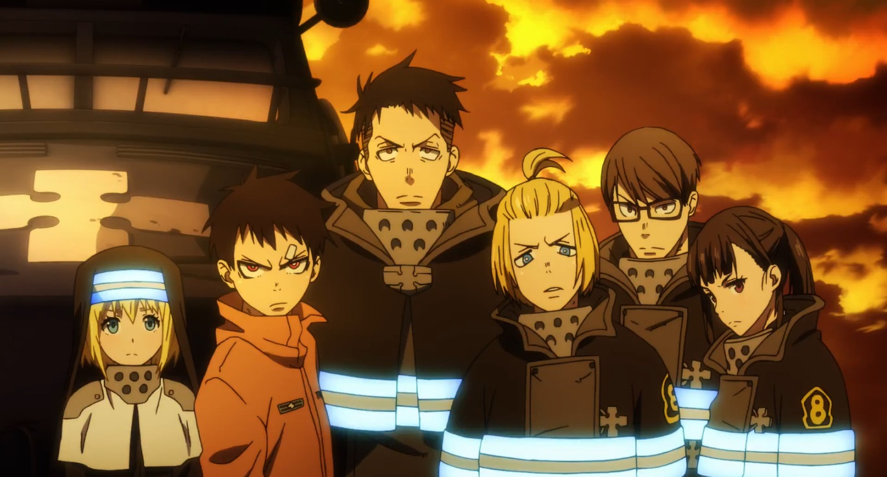

Disclaimer: This review covers the first season (24 episodes) of the 2019 anime "Fire Force" (or "En'en no Shobotai"). "Fire Force," along with the anime movie "Promare," were part of a short-lived trend of firefighters taking center stage in anime. And hey, if it inspires kids to become firefighters instead of pro gamers or fantasy blacksmiths, then all the better.More notably, this is based on a shonen manga by Atsushi Ohkubo, the author behind the hit "Soul Eater," a personal favourite anime of mine. Later, I eventually read a bit of the "Eater" manga, and wasn't impressed. The character designs are much weaker with rounder and cuter faces, lacking a lot of the personality in revised designs, music and animation that Studio Bones brought to the anime. The "Fire Force" manga was heavily advertised when it first came out, and I saw a lot of the first volume's cover: an ugly image of a sharp-toothed, black haired boy with fire coming out of his bare feet. I tend to be harsher on manga in general, but I'm convinced Ohkubo simply isn't that great of a manga author. His interview on the American Bluray's bonus features for "Fire Force" don't do any favours to suggest his stardom is anything more than dumb luck. Nonetheless, his work seems to inspire anime studios, and their efforts elevate the material to make for an exciting show. In this case, Studio Bones was still busy with their own hit shonen anime, "My Hero Academia," so "Fire Force" was produced at David Production, best known for the "Jojo's Bizarre Adventure" series. It's directed by Yuki Yase, an experienced staffer and frequent episode director for Akiyuki Shinbo, including for parts of the "Bakemonogatari" series. Hideyuki Morioka is the character designer, coming straight off of the fantastic designs in the "Kizumonogatari" movies. Clearly, a lot of top talent was put on this, and the resulting "Fire Force" anime doesn't disappoint. It's not quite as good or as original as "Soul Eater," but it's a pretty good spiritual successor, and sets a high bar for shonen anime to live up to. Not unlike "Promare," "Fire Force" is set in a alternate modern day where fire is personified by coming from humans. In this case, people spontaneously combust at random, turned into a living flame. While they lose their sense of self as they destruct their surroundings, it's described that the victims feel the sensation of being burned alive. In this world, a special task force of firefighters are prepared to head out when the alarm sounds, to fight and kill the victims and put their souls to rest. The fighters aren't ordinary firemen, as the combustion phenomenon also means new generations of people are born with special powers to control or spawn flames. Shinra is the main character and newest recruit for Company 8, and has the power to shoot powerful flames out of his feet, allowing him to fly like a rocket and deliver powerful kicks. He also has a weird personal quirk of grinning, showing off his sharp teeth, whenever he's nervous. That quirk is more than just a point of comedy whenever he's near a pretty girl: when found smiling after an accident involving his mother, he's given the nickname "devil." This motivates him to be a strong but sympathetic hero through his new job. The rest of the group have their own special skills and nicknames to match, such as "knight," "witch," and so on. A nun from the church is also part, to say a prayer before each soul is killed, a ritual everyone takes seriously. The show is quick to set up some tense drama to the world-building. On one hand, the victims, called "Infernals," could be anyone, from loving wives, caring fathers, criminals, and more. For anyone that cares for them, they fully understand there's no saving an Infernal once they combust, but that doesn't make it hurt any less. A bigger plot thread is the mystery behind what causes the combustions in the first place, and Shinra's memory of his childhood accident suggests someone might be starting them on purpose. The show reveals there were multiple parties that started the "Fire Force," (including religous, civic, and commercial enterprise), all of which have conflicting motivations, and the Fire Force has several numbered groups, with their own interests that clash against others. Group 8 is the newest, and most noble, quietly searching for answers and fighting corruption from the other groups while they save lives.  That's a lot of overlapping character-driven threads, all of which have an exciting edge to them. Each conflict feels personal, and the thought of buring alive and putting a soul to rest (versus not caring, or killing Infernals for fun) makes for a lot of villains. While arguably within range for a pre-teen audience, the show is surprisingly dark at times with its suggested off-screen violence, and the use of child victims in the fire attacks. All the characters are strong and cool in their own right. In fact, the whole show is effortlessly cool in its delivery. Perhaps a little juvenille, and overwhelming in the large cast, but still cool and entertaining. That large cast of conflicting leaders that are supposed to be on the same side reminded me a lot of "Bleach," for that matter. There's not much more to say about the story of intrigue and action, or the lighter moments of character-based comedy. It remains largely satisfying for the entirety of the first season. I'm sure simplifying the story would have allowed for a more complete conclusion earlier, but then you'd have no reason to invest in further episodes, right?If I had to nitpick, I admit some of the characters could be annoying at times. Even lead character Shinra and his noble stance sounds silly when he insists people give him nicknames, such as "call me 'hero-that'll-kick-your-face-in-guy' ." A side character named Tamaki gets the unfortunate running-gag quirk of being "unlucky," causing her to fall onto people and lose her clothes every time she's on screen - fanservice has its place, but the poor character doesn't have much else to justify her presence in the show (a shame, since she gets a great dramatic moment in an arc midway through the season). In fact, the challenge of giving each hero and villain a completely unique ability, with the restriction that they all relate to fire, gets weak as the cast gets larger. And while there's good momentum and motivation driving the story for the first season, it ends at a spot where that momentum is in danger of stalling, while also hinting at a last thread of hope for Shinra to get a happy ending, threatening the series to become an aimless shonen series for countless episodes beyond (I haven't seen the second season at the time of this writing, so this might not be a problem)."Fire Force" is full of cool character designs from both the heroes and villains. Animation is a little limited in most shots, and predictably picks up in the frequent action scenes. For important battles, especially in the final arc, some action scenes are theatrical-film quality. In key moments, creepy faces are given to villains for dramatic effect, and the designs and shading styles warp to more erratic visuals, an effective technique. Shinra's menacing smile often comes out in front of a big challenge or a strong enemy, and it's almost never clear if he's scared or overly-confident, but regardless, it's an admittedly cool visual that makes it easier to like the lead. Strangely, 3D effects are frequently used for the fire and water, and since both are often present in a firefighting show, they're distracting against the rest of the 2D characters and backgrounds. It's a shame, since there are plenty of examples of these natural effects in stylized 2D in other anime (and even "Fire Force" uses 2D examples sometimes, making the inconsistency all the more noticable). For audio, there's a lot of opportunity for sound effects to make an impression, but it's not overpowering. Likewise, the opening and ending themes are good, but not great (oddly, an English rock song was used for the second op), and I was more interested in their visuals (subtly expanding some backstory like a beautiful visual poem) than the music itself. Funimation's English dub is solid as expected, and for the more unstable characters, the actors probably had fun. Funimation's tendency to spice up the dialogue works well here to make scenes more intense. At the time of this writing, the "Fire Force" anime is still ongoing, with a third season in development. Interestingly, the manga has finished, and at the current rate, four seasons would be enough to for the anime to adapt it all, possibly at less than 100 episodes total. A big draw for me to watch a shonen anime is an achievable ending to the story, all the more reason for me recommend this franchise if it succeeds.
- "Ani" More reviews can be found at : https://2danicritic.github.io/ Previous review: review_Fire_and_Ice Next review: review_Fireworks